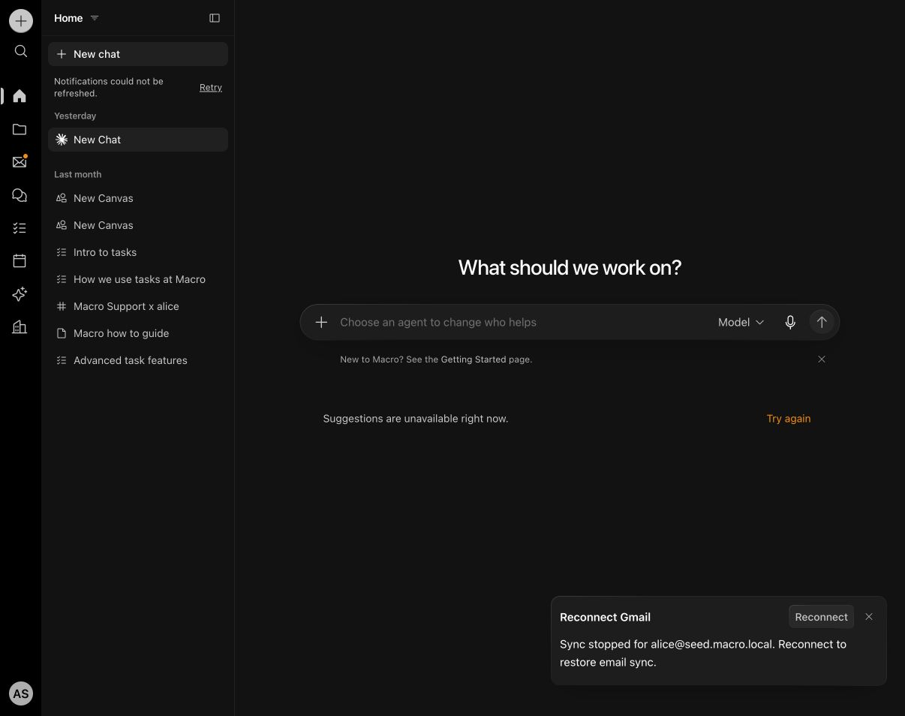

18 October 2026. Objective: revisit Macro in detail, identify why its workspace feels more intuitive, apply useful patterns to Incredible Studio, and verify the actual user flow. Previous turn: progress (d4cb52c4 changed navigation and added browser evidence).
| Requirement | Current evidence | Result |
|---|---|---|
| Detailed Macro walkthrough and architecture comparison | Live local Home, resource list/detail, hide-navigation, and New chat revisited. Macro docs/AGENT_GUIDE/navigation.md describes stable workspace providers, resource routes and explicit returns. New chat opens a composer directly. See image below and prior macro-walkthrough screenshots. | Verified, with document-backend limitation below. |
| Simple start; optional project, notebook, agent and repository context | Studio New chat opens composer directly. Optional Chat settings inspected; cancellation returns without creating a chat. Existing chat retains Kimi K3 and two pinned repository contexts. | Verified in visible browser. |
| Coherent workspace instead of competing panels | Persistent rail, collapsible project navigation, primary research document or notebook, minimizable chat. Desktop and mobile screenshots in navigation-walkthrough.html. | Verified. |
| Persistent chat with recursive research documents | Real Kimi child, ordinary reply, and grandchild in research-documents-annotated.html. Ordinary reply adds no document node. Parent breadcrumb and named context links backtrack without replacing chat history. | Verified through real generation and navigation. |
| Question map supports orientation without monopolizing the workspace | PiP, half-screen, full-screen controls; selecting a node returns map to PiP and opens its document. Labels use document titles. | Verified in visible browser; graph/workbench tests pass. |
| Keep curated notebooks distinct, preserve lineage and onward workflow | Selected generated excerpt saved separately with source link; notebooks now have reading space and named return-to-document link. Existing wireframe entry point preserved. | Verified; see research-documents-annotated.html and navigation-walkthrough.html. |
| Preserve ongoing work through navigation | Temporary unsent draft survived notebook/parent/map navigation and was cleared. Returning from New chat restored selected document and conversation. Restoring minimized chat lands on relevant turn. | Verified. |
| Regression and build gates | 238 files / 1,559 tests passed. Final scroll-restoration and CSS adjustments additionally checked with 27 focused tests, visible browser and production build; source-size and diff checks passed. | Passed. |
Latest annotated navigation walkthrough · Real Kimi document flow · Conversation/session and Macro observations

Macro's local document backend still returns an unavailable-document state; editing those documents is not claimed as tested. Its navigation and source architecture were inspected. Docker-backed storage checks remain blocked by disk exhaustion; this navigation pass changes no storage format. These results establish the implemented UX improvements and tested paths, not a claim of universal usability or a replacement for testing with new users.